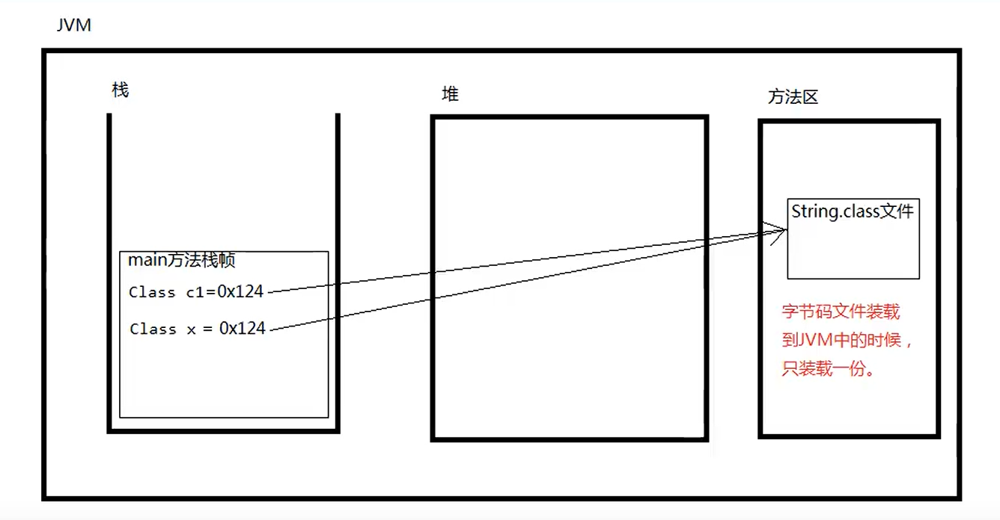

反射机制：
通过java反射机制可以操作字节码文件（可以读和修改字节码文件）
反射机制相关的包：java.lang.reflect.*;
反射机制相关的类：java.lang.Class：代表字节码文件
java.lang.reflect.Method：代表字节码文件中的方法字节码
java.lang.reflect.Constructor：代表字节码文件中的构造方法字节码
java.lang.reflect.Field：代表字节码文件中的属性字节码
先获取Class，才能获取Method、Constructor、Field。
public class User{
int no;//Field
public User(){}//Constructor
public void getNo(){}//Method
}
要操作类的字节码，首先要获取这个类，有三种方法
方法1、Class.forName();
1.静态方法
2.方法的参数是字符串
3.字符串需要完整类名
4.完整类名必须带有包名，java.lang也不能省略。
方法2、Object中有方法getClass()；//继承Object类中的方法
String s="abc";
Class x=s.getClass();
方法3、java语言任何一种类型，包括基本数据类型，都有.class属性
Class z=String.class;
注意：字节码文件（Class类型）在JVM中只能有一份

通过反射实例化对象
Class c=Class.forName("完整类名");
//newInstance()会调用改类的无参构造方法，实例化该对象
Object obj=c.newInstance();//已过时
反射机制创建对象的灵活性：与配置文件联合使用，可以做到对不同对象的实例化。（符合OCP原则：对扩展开放，对修改关闭）
Class.forName()方法执行会导致类加载。
如果只想让一个类的静态代码块执行，可以采用Class.forName()
JDBC Util方法;
获取类路径下文件的绝对路径：
src目录是类的根路径
String path=Thead.currentThread().getContextClassLoader().getResource("从类路径开始的相对路径（src下）").getPath();
//采用以上方法可以获得一个文件的绝对路径；

读取配置文件内容
String path=Thead.currentThread().getContextClassLoader().getResource("从类路径开始的相对路径（src下）").getPath();
FileRead reader=new FileReader(path);
Properties pro=new Properties();
pro.load(readr);
reader.close();
//获取内容
String className=pro.getProperty("className");
改进
//直接以流的方式返回
InputStream reader=Thead.currentThread().getContextClassLoader().getResourceAsStream(从类路径开始的相对路径（src下）);
Properties pro=new Properties();
pro.load(reader);
reader.close();
//读取
String className=pro.getProperty("className");
资源绑定器
java.util包下提供了一个资源绑定器，便于获取属性配置文件中的内容
注：使用资源绑定器的时候，属性配置文件xxx.properties必须放到类路径下
public class ResourceBundleTest{
public static void main(String[] args){
//资源绑定器，只能绑定xxx.properties配置文件。并且这个文件必须在类路径下。文件扩展名必须是properties
//写路径的时候，路径后面的扩展名不能写。
ResourceBundle bundle=ResourceBundle.getBundle("路径名");
String className=bundle.getString("className");
}
}
获取Class的名称
String s=studentClass.getName();//获取完整类名
String s=studentClass.getSimpleName();//简类名
获取Field（反射属性）
public class Student{
public int num;//整个public int num;是一个Field对象
private String name;
boolean sex;
protected int age;
}
public class ReflectTest{
public void static main(String[] args){
Class studentClass =Class.forName("Student");
//获取类中所有的(公开的)Field
Field[] field=studentClass.getFields();
//获取属性的名字 Field
Field[] fs=studentClass.getDeclaredFields();
for(Field field:fs){
//获取属性的修饰符列表
int i=field.getModifiers()//返回的int是修饰符代号
String modifierString= Modifier.toString(i);
//获取属性的类型
Class fieldType=field.getType();
String fName=fieldType.getName();
//获取属性的名字
System.out.println(field.getName());
}
}
}
反编译类文件（属性）
public class util{
public void decompilation(Class cl){
StringBuilder s=new StringBuilder();
s.append(Modifier.toString(cl.getModifiers())+"class"+cl.getSimpleName()+"{"+\n);
Field[] fields=cl.getDeclaredFields();
for(Field field:fields){
s.append("\t");
s.append(Modifier.toString(field.getModifiers()));
s.append(" ");
s.append(field.getType().getSimpleName);
s.append(" ");
s.append(field.getName());
s.append(";\n");
}
}
}
通过反射机制访问对象属性（掌握）
public static void main(String[] args){
Class student=Class.forName("Student");
//通过反射机制获取对象
Object obj=studentClass.newInstance();
//根据属性名称获取Field
Field field=studentClass.getDeclaredField("属性名");
//给对象的属性赋值
field.set(obj,属性值);给obj对象的属性赋值为"属性值";
//读取属性的值
field.get(obj);
//访问私有属性
Field nameField=studentClass.getDeclaredField("name");
nameField.setAccessible(true);//打破封装
nameField.set(obj,"jackson");//给name属性赋值
nameField.get(obj));
}
反射机制缺点：可以打破封装，可能给不法分子留下机会。
可变长参数
int ...args
语法：类型...
1、可变长参数个数要求为0-n个
2、可变长参数在参数列表只能是最后一个，并且可变长参数只能有一个。
3、可变长参数可以当成一个数组，也可以传一个数组。
反射Method
Class userServiceClass=Class.forname("User");
//获取所有的Method（包括私有的）
Method[] methods=userServiceClass.getDeclaredMethods();
遍历methods
for(Method method:methods){
获取修饰符列表
Modifier.toString(method.getModifiers());
//获取方法名
method.getName();
//获取返回值类型
method.getReturnType().getSimpleName();
//方法的参数列表
Class[]parameterTypes=method.getParameterTypes();
}
反编译Method
public class util{
public void decompilation(Class cl){
StringBuilder s=new StringBuilder();
s.append(Modifier.toString(cl.getModifiers())+"class"+cl.getSimpleName()+"{"+\n);
Method[] methods=cl.getDeclaredMethods();
for(Method method:methods){
s.append("\t");
s.append(Modifier.toString(method.getModifiers()));
s.append("");
s.append(method.getReturnType().getSimpleName);
s.append(" ");
s.append(method.getName());
s.append("(");
//参数
Class[] parameterTypes=method.getParameterTypes();
for(Class parameterType:parameterTypes){
s.append(parameterType.getSimpleName());
s.append(",");
}
if(parameterTypes.length>0){
s.deleteCharAt(s.length()-1);
}
s.append("){}\n");
}
}
}
通过反射机制调用方法（掌握）
Class userServiceClass=Class.forName("User");
//创建对象
Object obj=userServiceClass.newInstance();
//获取Method
Method loginMethod=userServiceClass.getDeclaredMethod("方法名,参数类型.class,参数类型.class,,,")
/*调用方法
要素分析：
要素1：对象
要素2：方法名
要素3：实参列表
要素4：返回值
*/
Object retValue=loginMethod.invoke(obj,"admin","123")
反编译构造方法
StringBuilder s=new StringBuilder();
Class VipClass=Class.forName("Vip");
s.append(Modifier.toString(VipClass.getModifiers()));
s.append("class");
s.append(VipClass.getSimpleName());
s.append("{\n");
//拼接构造方法
Constructor[]constructors=vipClass.getDeclaredConstructors();
for(Constructor constructor:constructors){
s.append(\t);
s.append(Modifier.toString(constructor.getModifiers()));
s.append(" ");
s.append(VipClass.getSimpleName());
s.append("(");
Class[]parameterTypes=constructor.getParameterTypes();
for(Class parameterType:parameterTypes){
s.append(parameterType.getSimpleName());
s.append(",");
}
if(parameterTypes.length>0){
s.deleteCharAt(s.length()-1);
}
s.append("){}\n");
}
s.append("}");
System.out.println(s);
反射机制调用构造方法/通过反射机制创建对象
Class c=Class.forName("User");
//调用无参构造方法
Object obj=c.newInstance();
//调用有参构造方法
Constructor con= c.getDeclaredConstructor(参数1.class,参数2.class);
//new对象
Object newObj=con.newInstance(参数1，参数2 );
System.out.println(newObj);
//获取无参构造方法
Constructor conn= c.getDeclaredConstructor();
Object nobj=conn.newInstance();
反射机制获取父类及实现的接口
Class stringClass=Class.forName("java.lang.String");
Class superclass=stringClass.getSuperclass();
//获取String类实现的所有接口
Class[] interfaces=stringClass.getInterfaces();
for(Class in:interfaces){
System.out.println(in.getName());
}